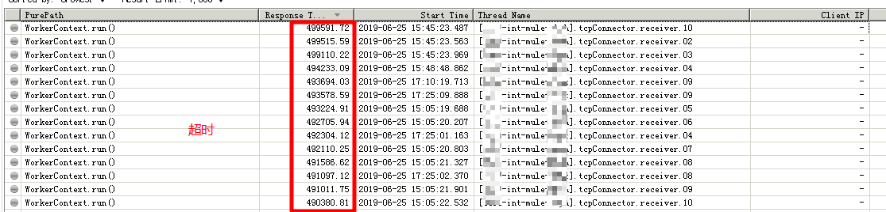
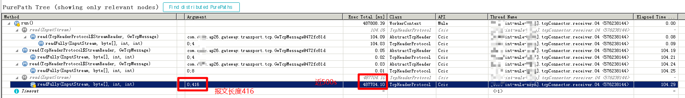

MULE 无法接收TCP报文问题分析
在 2019-07-02 Tuesday 发布于 Observability 分类 • 1 min read
概述¶
近期某使用mule的项目在与N公司联调时发现对方的请求存在严重延迟. 请求是基于TCP协议的. 通过一步步分析, 最终定位到问题的根源并解决. 也通过本文对整个过程进行下梳理和总结.
问题描述¶
我是6月24日突然被拉进一个微信群的. 当时的情况是: 该项目碰到一个棘手的问题, 开发找不到问题根源, 已经联系过主机和网络, 也没有什么进展.
开发的详细描述¶
问题详细描述:
近期我们在与N公司渠道端进行联调，对方通过专线接入(TCP协议传输)，访问我方的内部联调环境。在联调过程中，我们发现对方的请求，存在很严重的延迟现象，经常性的出现超时，或者间隔十几分钟后，我方才收到对方请求。严重影响了联调。能否帮忙看看，是哪里有问题导致的？
经多次跟踪，均未找到问题，目前mule-for-N公司的应用程序(部署在8110端口)已经完全参照已上线渠道(部署在6040端口)的应用代码格式编写。但是重新联调时，渠道方反馈一直超时read timed out，联系网络组重新进行抓包确认，服务器是正常接收渠道方请求，但是应用程序这边却需要在十几二十分钟之后才能接收到渠道请求，所以请老师帮忙看下，能否配合检测下从xx机器缓存字段接收区分发到应用服务端口之间的状态情况。
问题分析流程¶
要分析问题, 最重要的是2件事:
- 尽可能多的细节. 并且在这些细节中, 分清楚:
- 哪些是既定事实
- 哪些是阐述者自己的判断.
- 对任何事情都保持怀疑. 哪怕是:
- 既定事实. 或
- 你认为所有人都绝不可能犯的简单错误
问题梳理¶
 再次回顾一下开发的详细描述, 事实有:
再次回顾一下开发的详细描述, 事实有:
- 专线接入
- TCP协议传输
- 请求经常性的出现超时
- 渠道方反馈一直超时read timed out
- 服务器是正常接收渠道方请求
- 换另一个mule(6040) app, 应用可以立马收到.
开发自己的判断是:
- 可能是网络问题
- 可能是所在的机器缓存字段接收区分发到应用服务端口之间可能有问题. (主机问题)
第一天 - 6月24日¶
主机网络情况了解
当前的情况是:
- 网络组已经抓包了, 基本可以确定不是网络问题. (但是证据不够强有力)
- 主机组无法自证所谓的: 所在的机器缓存字段接收区分发到应用服务端口之间的状态
前一天是梳理好开发的描述, 主机和网络组也做了些测试分析, 今天首先要做的就是询问他们的测试分析情况.
"我从服务器抓包 能正常接收到对方的包, 但是应用不能及时收到"
"服务器上面抓包，显示收到报文了, 也回复ack了. 是实时收到的."
"他换了6040端口，应用可以立马收到. 8110端口就有问题, 服务器上能收到，就是他应用收不到"
对以上的描述梳理后, 事实没有更新, 但我自己基本上断定问题和主机/网络无关, 而应该是应用的问题. 新增判断:
Ⓜ️主机网络的判断也是:
- 可能是应用问题.
那么接下来就是尽可能的增加应用的可观察性了, 发生问题期间, metrics指标肯定没问题, 日志也找不到问题. 那么这时候就只能用到APM监控了.
装应用监控
这边有个小插曲, 我也大致描述一下吧.
APM监控, 我这边有2套:
- 开源APM - pinpoint
- 商业APM - Dynatrace AppMon
先装pinpoint, 装完pinpoint agent重启后, 发现拿不到请求数据. 拿不到数据2个原因:
- mule 这个组件比较特殊, 没有对应的插件;
- 报文直接走的4层TCP协议, pinpoint无法抓到4层TCP.
所以最后还是安装Dynatrace了监控.
第二天 - 6月25日¶
-
Dynatrace已监控, 经过配置后(默认也抓不到, 因为入口点不是常用的应用传输协议. 另外后续会有另一篇文章介绍如何进行这些高阶监控配置)可以看到mule的所有Transaction.
-
生效后再进行联调, 发现情况: mule-forN公司应用 立马就可以接收到报文的, 只是接收了之后处理必超时. 其实这里就可以断定不是主机和网络的问题了. 如下图:

-
初步怀疑是"接收报文"的方法可能有问题. 问开发, 开发不知道是哪个方法. 个人根据方法树判断, 可能是:
com.xxxx.ap26.gateway.transport.tcp.protocol.TcpHeaderProtocol.readFully(byte[], int, int)(翻到结论可以发现, 我个人判断的并不是完全准确), 针对这个方法进行更细粒度监控. (加入sensor, 抓取第三个参数int) -
加入后, 发现会调用4次, 前3次都很快, 第4次超时. 第四次
int是416报文长度. 但是这个却执行了近500s. 如下图:
作为对比, 正常的请求是这样的:

第二天初步结论
第二天主要是配监控和联调. 目前得到的初步结论有:
- N公司发过来的, 不论是发到mule-forN公司 8110端口还是已上线渠道6040端口, 都是450-500s 超时. 一直在socketRead读取数据. (也是通过监控看到的, 所以之前的事实: 换另一个mule(6040) app, 应用可以立马收到 并不是事实.
- 肯定不是网络和主机的问题. 因为mule已经收到了.
- 肯定是应用的问题. 因为mule在处理且在开发自己写的代码处超时了. (具体见上图)
至此, 我的怀疑点有3:
- 怀疑报文传输处理过程出错: 看一下报文传输或者处理过程中是不是出现问题了, 报文长度416, 但是读取了480多s还在读取.
- 怀疑编码问题: 我还是觉得可能跟报文的编码格式问题有关系. 建议对一下报文的编码格式. (这个怀疑后来验证不成立)
- 怀疑开发的TCP相关方法实现问题:
com.xxxx.ap26.gateway.transport.tcp.protocol.TcpHeaderProtocol.readFully(java.io.InputStream, byte[], int, int)这个方法实现可能有问题 (这个怀疑其实后面也被证明不正确)
第五天 - 6月28日¶
因为我不是开发, 我最终只能将怀疑范围缩小到应用相关的3点. 我这边根据监控和判断, 给出了我的建议和后续的调查方向. 开发老师也是不负众望, 最终定位到了问题的根源.
问题根因详细说明
问题定位到了，mule的一个getway方法对渠道请求做TCP解析后再把消息转给mule-forN公司 8110端口，现在是接收到渠道416个字符，但是重新read的时候只read到400个字符，剩余16个read不到，然后就一直在等待状态(等待不准确, 其实是IO状态, 停留的方法为
java.net.SocketInputStream.socketRead0)了，从readfully方法里出不来.真正有问题的, 实际上是
com.xxxx.ap26.gateway.transport.tcp.protocol.TcpHeaderProtocol.readFully(java.io.InputStream, byte[], int, int)的上一个方法, 做TCP解析的方法:com.xxxx.ap26.getaway.transport.tcp.protocol.AbstractTcpHeader. (xxx.TcpHeaderProtocol.readFully方法读取tcp, 读取tcp之前xxx.tcp.protocol.AbstractTcpHeader做解析)就卡在
int readLen = inputStream.read(buffer,bytesOffset,remain);这么一行代码上， buffer是每次读取字节数，比如1024，bytesOffset是字节起始索引，remain是需要读取的字节数。检测渠道传进来的报文，是416个字节，
remain=416，但是read的结果是readLen=400，少了16个字节，他会循环再读，读不到就一直卡在这了
根因及解决办法¶
 根因:¶
根因:¶
确实是TCP相关方法实现的问题, 解析TCP的方法有问题, 导致报文处理过程出错, 从而导致报文处理超时.
 解决办法¶
解决办法¶
解决了，换了种方式，
tcpheader是我们自己封装的，现在不用它了，直接用原生TCP对象解析.
感悟和结论¶
- 现在已经9012年了, 网络出问题的概率很小. 碰到问题, 请不要把网络列为第一怀疑点, 这个会带偏分析方向;
- 出问题, 自己代码问题概率最大, 其次才是: 框架, java源代码, 主机, 网络... 所以首先要做的应该是增加自己应用的可观察性.
- 开发如何增加代码的可观察性?
- 做threaddump和cpu采样
- 加debug日志
- 做trace分析.
- APM监控真是个分析问题的神器, 像这种既不是常用软件(如tomcat, nginx...), 又不是通用协议(如: HTTP/ web service...)的情况, APM还是能追根溯源. 顺便还能帮助主机网络组老师自证清白.